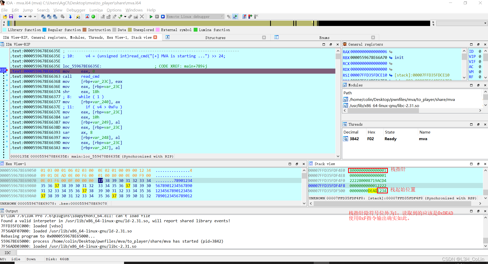

这是一道vm题。前几天师傅让我看看这道题，发现是一种没有做过的类型。查询相关资料之后有了一定的了解。由于是第一次做这种题，就将wp写的尽可能详细一些，作为笔记备查。
源文件：my_github
vm-pwn是一种虚拟机pwn，我的理解是，我们自己用C语言写一个虚拟机。在这个虚拟机里面可以进行各种操作，如加减乘除、堆栈操作等。这里各种操作的操作码可以是我们自己定义的，比如我们定义01开头的指令为加，02开头为减，等等。我们不管当前的主流架构是怎么实现的，这个程序本身相当于是”发明“了一种小型的轻量级的汇编语言。我们需要找到这种语言的漏洞以跳出虚拟机，进而getshell或getflag。
大致了解了这种题目的背景之后，我们就可以进去看题了。
指令首先是写在了bss段的一个地方，在main函数中有一个死循环，里面的sub_11E9函数应该就是读取指令的函数了。改名为read_cmd。
这里反汇编看着不太清楚，还是要深入到汇编去查看。
1 | .text:0000000000001213 lea rdx, code |
上面这一段汇编是read_cmd里面的，主要功能就是从输入的指令中读取4字节后将这4字节高位变低位，低位变高位（从小端序到大端序的转换）。在read_cmd返回后，eax中存放的就是读取到的指令。读取指令后返回到main函数中，一开始看到main函数下面有很多没有解析的部分，将其手动转为汇编代码，发现有很多跳转指令，那么基本可以判断出，下面就是解析并执行指令的部分了。跳转指令应该是在判断指令的类型。
1 | .text:000000000000135E mov eax, 0 |
在调用read_cmd函数之后，main函数将指令的不同位保存到栈中不同的位置，但这些位置基本上相邻。
下图为栈中保存的指令值情况（假设读取的指令为0x76543210）
| addr | +0 | +1 | +2 | +3 | +4 | +5 | +6 | +7 |
| rbp-0x250 | - | - | - | - | - | - | - | 32 |
| rbp-0x248 | 54 | 76 | - | - | - | - | - | - |
| rbp-0x240 | 10 | - | 76 | 54 | 76 | 54 | 32 | 10 |
之后判断原输入的最低位是否大于0xF，如果大于则跳过该指令。这说明这个虚拟机中的指令码只可能有0x0~0xF最多16种。我们修改一下输入，然后接着跟着执行流一步一步走。
1 | .rodata:000000000000206C dword_206C dd 0FFFFF38Bh ; DATA XREF: main+134↑o |
接下来，程序提到了rodata中的这个地方，这里发现这个未知数据的长度为64字节，正好是16*4，每一个4字节对应一条指令，但具体含义尚不清楚。
1 | .text:00000000000013D6 lea rdx, ds:0[rax*4] |
往下看不远处，我们就知道这个64字节数据是用来干嘛的了。它起始就是一个地址的偏移量，将对应指令的偏移量加上rodata的地址值，得到的就是指令对应的执行部分的地址。将其重命名为exec_offset。
…
经过亿段时间的分析之后，我大概搞清楚了其中一些指令的含义。
在这个虚拟机中一共有6个word类型的寄存器，这6个寄存器通过偏移获取。在这16种指令中有加减乘除、与或异或等算数指令，这些指令需要3个操作数。格式为：（下面所有格式均为高地址到低地址，在写入时需要调换一下顺序）
指令码: 2, 功能: 加法, 格式: op1 op2 op3 0x2——reg(op3) = reg(op1) + reg(op2)
指令码: 3, 功能: 减法, 格式: op1 op2 op3 0x3——reg(op3) = reg(op2) - reg(op1)
指令码: 4, 功能: 按位与, 格式: op1 op2 op3 0x4——reg(op3) = reg(op2) & reg(op1)
指令码: 5, 功能: 按位或, 格式: op1 op2 op3 0x5——reg(op3)= reg(op2) | reg(op1)
指令码: 6, 功能: 右移, 格式: op1 op2 op3 0x6——reg(op3) = reg(op3) >> reg(op2)
指令码: 7, 功能: 按位异或, 格式: op1 op2 op3 0x7——reg(op3) = reg(op1) ^ reg(op2)
指令码: 13, 功能: 乘法, 格式: op1 op2 op3 0xD——reg(op3) = reg(op1) * reg(op2) 【注意这里没有检查op2的范围，是一个漏洞】
除此之外，还有一些其他类型的指令，这里也列举一下。
指令码: 0, 功能: 退出, 格式: op1 op2 op3 0x0——exit()
指令码: 1, 功能: 赋值, 格式: op1 op2 op3 0x1——reg(op3) = op1 + op2 >> 8 (op1 = LOBYTE(op3), op2 = HIBYTE(op3))
指令码: 9, 功能: 入栈, 格式: op1 op2 op3 0x9——若op3 == 0则push (reg(0))，若op3 != 0则push (op1 + op2 >> 8) 【注意这里虽然有对栈是否满的检查，但是没有对op3大小的检查，可以push虚拟机空间之外的东西，是一个漏洞】
指令码: 10, 功能: 出栈, 格式: op1 op2 op3 0xA——reg(op3) = pop()【这里有对op3大小和栈是否为空的检查】
指令码: 12, 功能: 比较两个寄存器的值是否相等。因为返回相等的控制位没有被其他指令所引用，因此这里不做分析。
指令码: 14, 功能: 寄存器赋值, 格式: op1 op2 op3 0xE——reg(op2) = reg(op3)【注意这里没有检查op2是否为负数，是一个漏洞】
指令码: 15, 功能: 输出栈顶的值（这里指的是没有被占用的地方，也就是栈实际占用空间还往上一个字的值，这个字现在实际上并没有进入堆栈）
还有8和11的指令码没有分析，不过从官方wp上看这两个应该是无关紧要的，就暂且不管了。
然后我们需要整理一下思路，想想如何才能利用上面的漏洞getshell。
要想getshell，首先要拿到libc加载地址，通过这个加载地址得到one_gadget的地址，然后需要将one_gadget地址写入返回地址中。整个过程看似简单，但首先第一个问题：如何拿到libc加载地址？
注意到赋值操作中目的操作数是没有检查负数的情况的，经过IDA调试发现栈指针在寄存器的低地址处，我们可以让目的操作数为负进而指向栈指针，这样我们就可以用寄存器中的值去覆盖栈指针的值。栈指针是一个8字节结构，对应赋值的偏移应为0xF6、0xF7、0xF8、0xF9，我们将0xF6偏移位置覆盖为0x8000即可让栈指针变为负数。在输出值（指令码0xF）时，这个最高位的0x8000会溢出，从而我们可以读取寄存器后面任何一个位置的地址。经过试验发现，栈指针为0x10C时对应main返回地址最低字，即__libc_start_main+243。我们读取0x10C、0x10D、0x10E三个字的值就可以完全掌握libc的加载地址了。注意这里读取不用0xF指令，因为它只有输出功能，等脚本读到输出之后你的小程序早就执行完了。因此这里使用pop指令，它只会检查栈指针是否为0，因此可以绕过。

在pop之后，我们获得了libc的加载地址，这里需要进行一些计算来获得one_gadget的地址。然后我们将其push到返回地址处就可以了。这里需要注意的是，由于每一个寄存器只有2字节长度，因此返回地址需要用3个寄存器存储，在计算的时候会忽略向高位的借位，因此可能在计算时出错，但这是一个小概率事件，大约有1/4的概率会失败。
1 | .text:00005607BDE667A1 case_9: ; *** code: 9 |
请注意上面的代码片段，这是检查栈指针是否大于100。但是跳转是jle，这表示它是有符号的比较。那也就是说如果栈指针是一个负数，如果看做无符号数的话是一个很大的数，但也能通过检查，这就为我们写入返回地址创造了条件。
因此，大致的步骤就是：
Step 1: 修改栈指针到返回地址处
Step 2: 读取返回地址
Step 3: 计算one_gadget地址
Step 4: 写入返回地址
Step 5: getshell
payload:
1 | from pwn import * |
当shell拿到之后，我们发现这种题目其实并不难，只要计算一下地址然后写入就行了。就是分析代码比较麻烦，需要明确每一种指令分别代表什么含义，找到里面的漏洞进而思考如何getshell。从这道题可以看出，vm-pwn题中最为致命的就是堆栈检查不严格，可能会产生任意地址读写漏洞，还有整型溢出问题也值得关注。